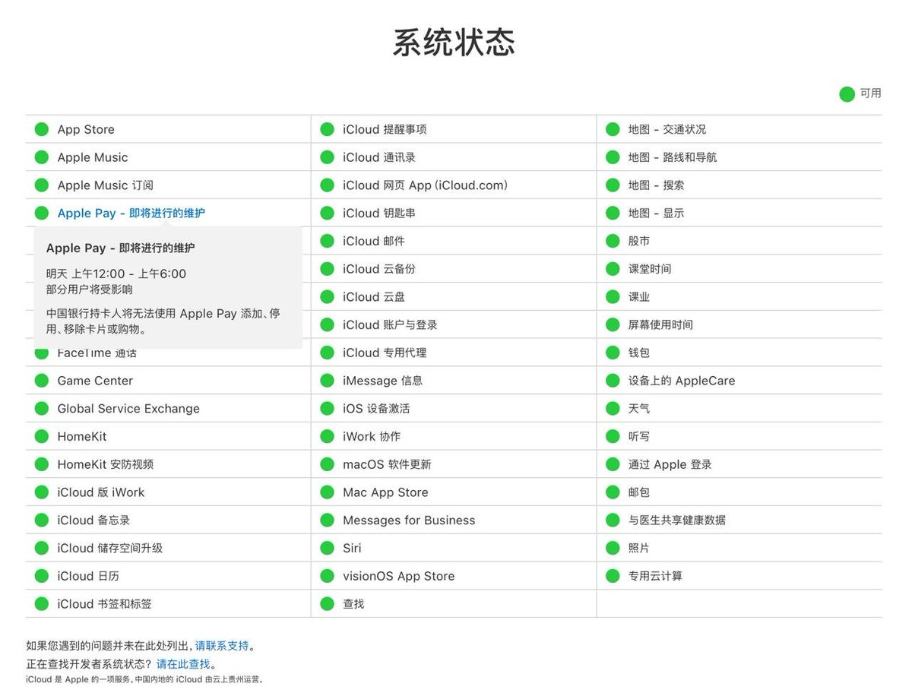
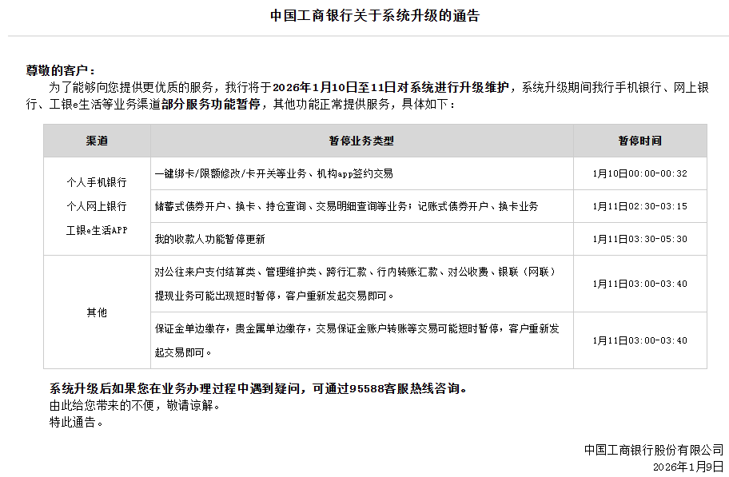
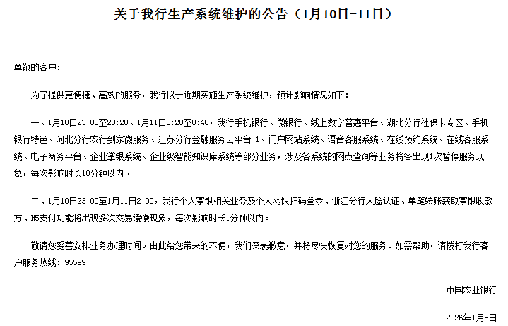

奶昔🥤
@realNyarime
中国Apple Pay功能明晨维护，四大行系统升级
据 Apple 系统状态页面消息，Apple Pay 1月10日0时至6时（明日凌晨）计划维护，期间中国银行持卡人将无法使用 Apple Pay 添加、停用、移除卡片或购物。
另外工行、农行、建行将于本周末维护银行系统，维护时间为10日凌晨、11日凌晨不等。
无法确认本消息内容是否与境内外标卡上线 Apple Pay 进度相关，仅供参考。万事网联真的要来了吗？


